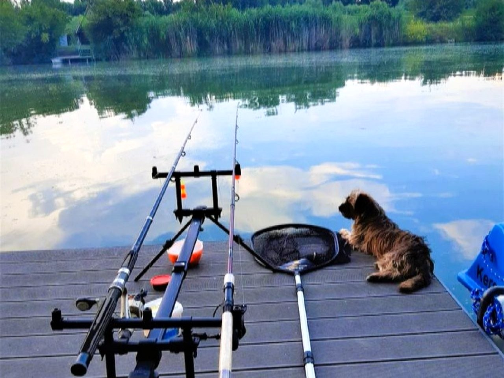

The backwater, the dyke and the area around.
Nothing is far away, and nothing needs arranging in advance. We live here, so ask us any time.
Kayak and boat
Two touring kayaks, a boat and a pedalo at the private jetty, with life jackets. The backwater is quiet — no motorboats run on it.
Fishing
The jetty is at the end of the garden. You can buy a local permit in the village — just ask and we will show you where.
Cycling on the dyke
Three bicycles at the house, and a flat path along the dyke towards Szarvas and Gyomaendrőd.
Arboretum
The Szarvas arboretum is 12 km away, a quarter of an hour by car. At its best in early summer.
Thermal baths
In Szarvas, a quarter of an hour away. The best plan for a rainy day.
Nature reserve
The house stands on the Kákafok backwater inside a protected area — the birds here are louder in the morning than anything else.
Worth a quick read before you book.
Arrival
We hand over the keys in person, we are there. If you are running late, a phone call is enough.
Deposit
30% of the accommodation price by bank transfer — this confirms the booking.
Security deposit
70,000 Ft cash on arrival, returned on departure.
A quiet house
Not a party house. Smoking is not allowed in the buildings.
Where the house is.
In Békésszentandrás, on the bank of the Kákafok backwater, inside a nature reserve. 150 km from Budapest, roughly two hours by car. By train you can come as far as Szarvas, and we will pick you up from there.
No motorboats run on the backwater, so the water stays quiet. A flat path runs along the dyke towards Szarvas and Gyomaendrőd — there are three bicycles at the house.
150 km from Budapest, roughly two hours by car. By train to Szarvas, and we will pick you up from there.